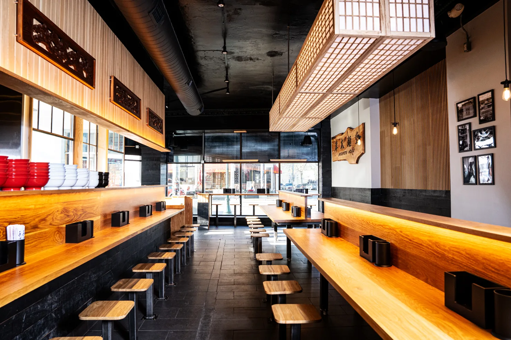

Shishito Peppers --
flash fried, ponzu, katsuobushi .
$5
Japanese Potato Salad --
mashed yukons with kewpie, cucumber, carrot, corn, cripsy shallot topping .
$5
Chashu Rice Bowl --
chopped chashu on rice will scallion, ramen egg, nori, and scallion .
$8
Oolong Tea can --
$3
Green Tea can --
$3
Excel Bottled Soda --
$3
Japanese ramen dish where cooked, chewy noodles are served in a separate bowl from a rich, concentrated dipping broth
Gyokai Tsukemen Classic -- concentrated seafood infused pork bone borth served aside cold rinsed thick noodles, topped with pork belly chashu, kikurage, menma, scallion, and nori .
$17
Red Tsukemen --
classic flavored with spicy miso .
$18
Brothless Ramen
Aburasoba -- thick noodles tossed in smoked seafood infused lard, topped with pork belly chashu, menman, gyofun, scallion, and nori .
$16
Taiwan Mazesoba --
concentrated seafood infused pork bone borth served aside cold rinsed thick noodles, topped with pork belly chashu, kikurage, menma, scallion, and nori .
$18
What you came here for!
Tonkotsu Classic -- rich pork bone broth with thin hakata style noodles, topped with pork belly chashu, kikurage, scallion, and pickled red ginger .
$16
Tonkotsu Black --
classic with addition of roasted garlic oil .
$17
Gyokai Tonkotsu Classic -- rich seafood infused pork bone broth with thick lekei style noodles, topped with pork belly chashu, kikurage, menma, scallion, and nori .
$18
Gyokai Black -- classic with addition of roasted garlic oil .
$19
Gyokai Red -- classic with addition of spicy miso topping .
$20